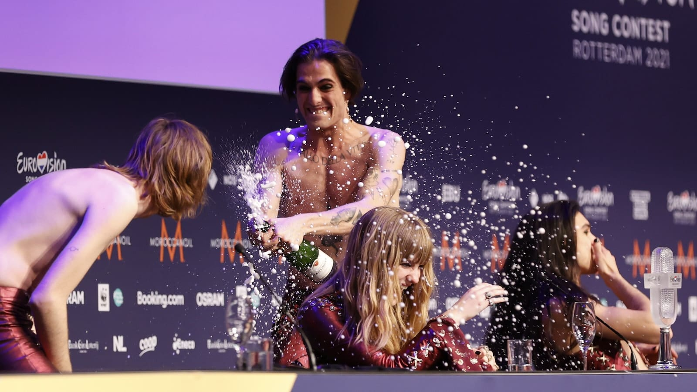

4
Iun
Måneskin - Rock 'n' Roll Never Dies
Cred că ați observat și voi că de mai bine de o săptămână tiktok-ul, discovery feed-ul de pe Instagram și recomandările de pe YouTube sunt inundate de Måneskin. Bănuiesc că majoritatea știți cine sunt aceștia, dar pentru necunoscători, Måneskin este o trupă rock din Italia care a câștigat Eurovision 2021.